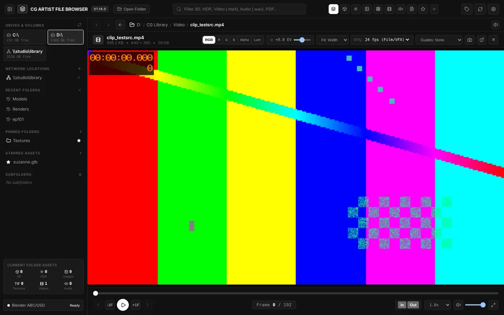
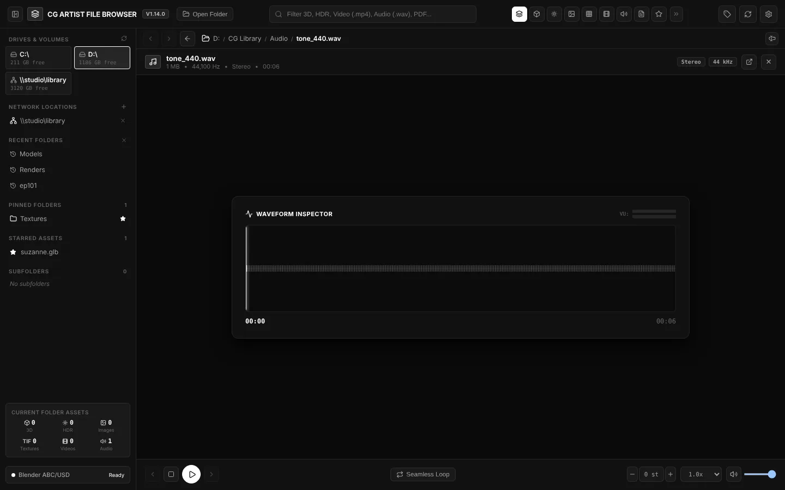

Deep dive
Video and audio
The video player with frame stepping, in and out loop points, safe-area guides and speed. The audio player with a waveform, seamless loop and pitch.
Video
MP4, MOV, WebM, MKV and AVI files open in the video player. The bar under the picture has a scrubber, a frame counter (click it to switch between frames and timecode), play and pause, and a speed control.

- Step frames: the arrow keys or
,and.step one frame at a time. - Loop: set an in point with
[orIand an out point with]orO. The clip then loops between them.\clears the loop. - Safe areas: turn on the action-safe (90%) and title-safe (80%) guides, and the aspect-ratio guides, for checking framing.
- Fit: choose how the video fits the window, and reveal the file in Explorer from the same bar.
- Next and previous: move to the next or previous video in the folder.
You can also drag the scrubber in Quick Look, and the video keeps playing while you scrub. See Quick Look.
Audio
WAV, MP3, OGG, FLAC, AAC, AIFF and M4A open in the audio player, with a waveform and the file properties.

- Seamless loop (
L) repeats the file without a gap, which is useful for checking game loops. - Pitch changes the pitch in semitones without changing the speed. Click the value to reset it to 0.
- Previous and next move through the folder; stop returns to the start.
Found a mistake or something missing? Edit this page on GitHub.